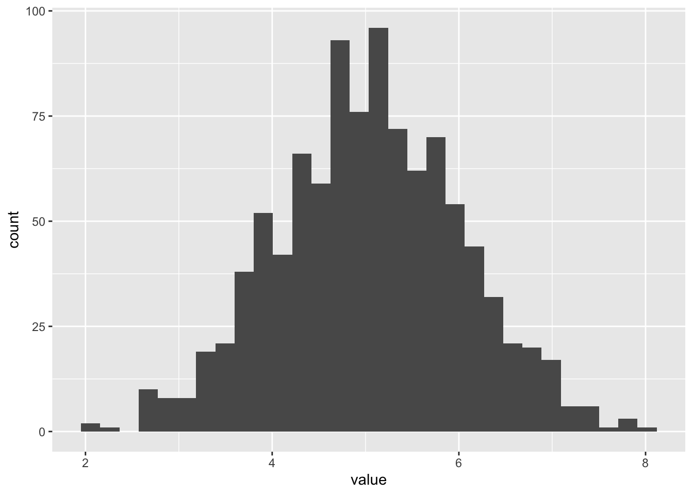
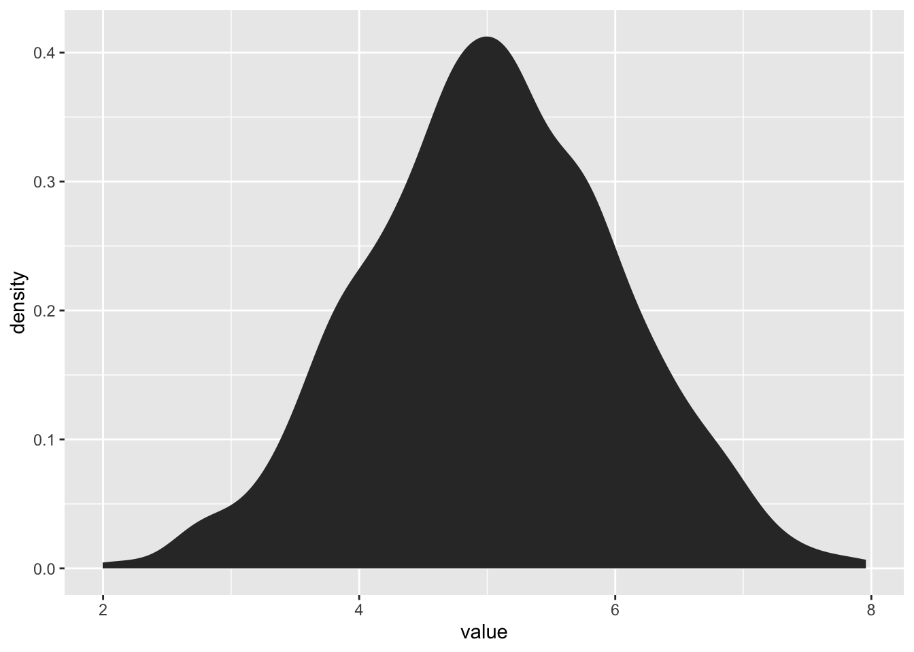
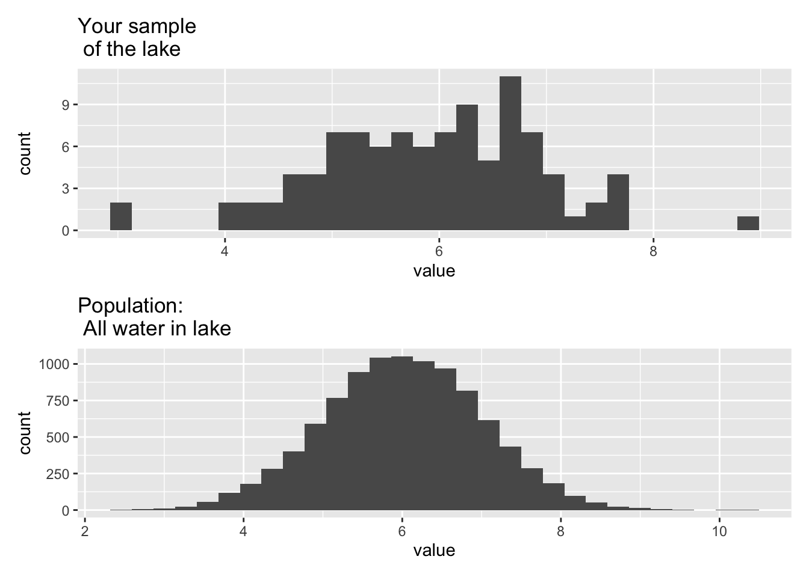
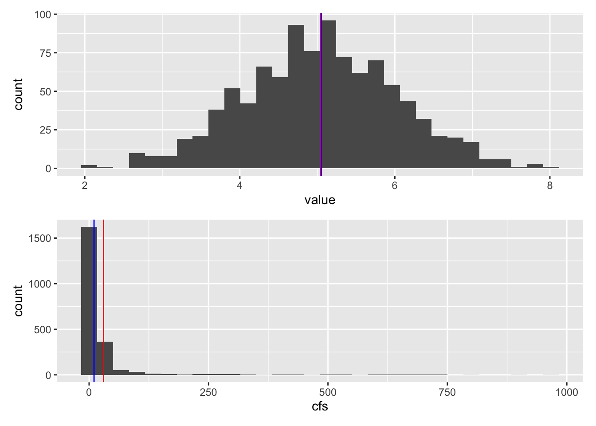
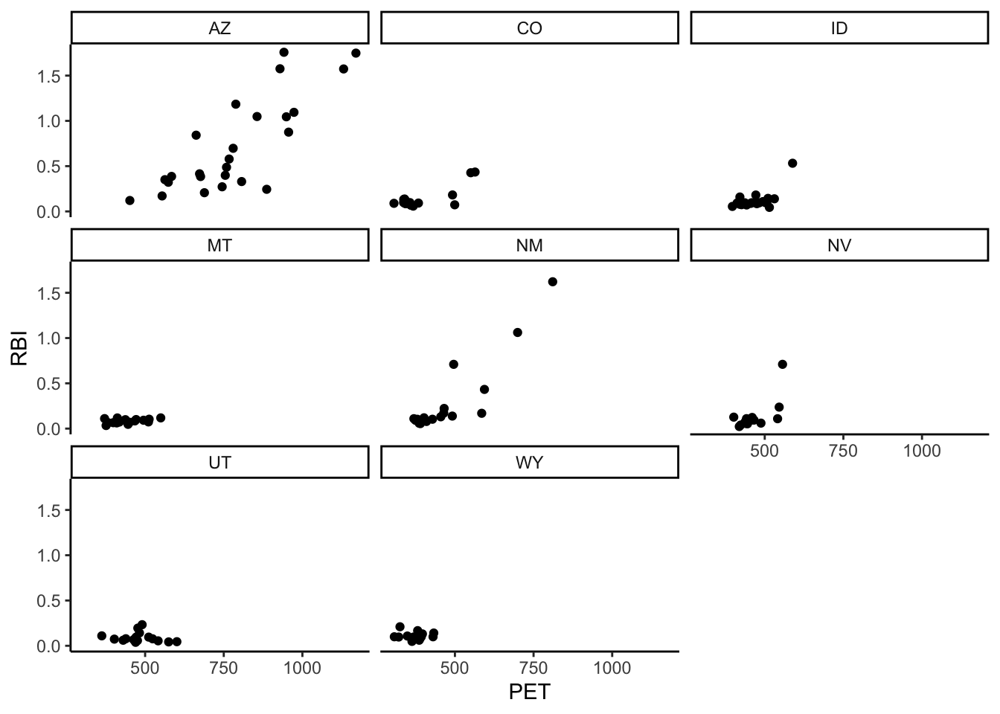
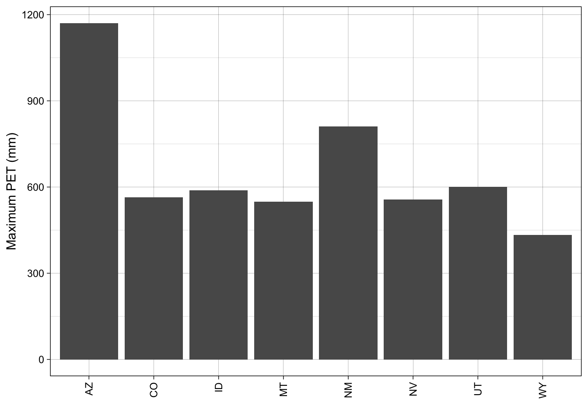

Chapter 5 Statistics in hydrology - Unit 3
You can find the repo for this activity here
5.1 Learning objectives
- Describe the characteristics of normal and non-normal distributions
- Understand the difference between a sample and a population
- Quantitatively describe data distributions
- Test data sets for normality
Reading for this section
Statistical Methods in Water Resources: Chapter 1
Today will use a new package called patchwork that is an extension to ggplot. See here for ggplot extensions including patchwork.
library(tidyverse)
library(patchwork)First let’s generate some synthetic data and talk about how to visualize it.
# generate a normal distribution
ExNorm <- rnorm(1000, mean = 5) %>%
as_tibble()
# look at distributions
# first using a histogram
ExNorm %>%
ggplot(aes(value)) +
geom_histogram()
# next using the pdf
ExNorm %>%
ggplot(aes(value)) +
stat_density()
#Let's generate a plot that makes comparing these two easierStack plots to compare histogram and pdf
We will save each plot as “ggplot object” and then output them using the patchwork package (loaded in the setup chunk).
We have made other objects, like data frames or values, how do you think you would make a ggplot object?
# histogram
exhist <- ExNorm %>%
ggplot(aes(value)) +
geom_histogram()
# pdf
expdf <- ExNorm %>%
ggplot(aes(value)) +
stat_density()
# put the plots side by side with + or on top of each other with /
# I've also shown how to put a caption into a patchwork figure that has multiple panels.
p <- exhist/expdf
p + labs(caption = "Figure 1. Comparison of histogram (top) and probability density function (bottom) of a synthetic data set generated with\n the rnorm function, 1000 samples, and a mean of 5.") + theme(plot.caption = element_text(hjust = 0))
5.2 Homework Q1 (2 pts)
- What is the difference between a histogram and a pdf?
- What features of the histogram are preserved? Which are lost?
5.3 What is the difference between a sample and a population?
Simply put: a population is the thing you are trying to measure. A sample is the data you measure in an effort to measure the population. A sample is a subset of a population.
Let’s write some code for an example:
We will create a POPULATION that is a large set of numbers. Think of this is as the concentration of Calcium in every bit of water in a lake. Then we will create a SAMPLE by randomly grabbing values from the POPULATION. This simulates us going around in a boat and taking grab samples in an effort to figure out the concentration of calcium in the lake.
We can then run this code a bunch of times, you’ll get a different sample each time. You can also take a smaller or larger number of samples by changing “size” in the sample() function.
all_the_water <- rnorm(10000, mean = 6) %>%
as_tibble()
sample_of_water <- sample(all_the_water$value, size = 100, replace = FALSE) %>%
as_tibble()
population_hist <- all_the_water %>%
ggplot(aes(value))+
geom_histogram()+
ggtitle("Population: \n All water in lake")
sample_hist <- sample_of_water %>%
ggplot(aes(value))+
geom_histogram()+
ggtitle("Your sample \n of the lake")
population_hist + sample_hist
# OR
sample_hist/population_hist
5.4 Homework Q2 (2 pts)
- How does your sample distribution look similar or different from the population?
- Why does the sample change every time you run it?
- What happens as you increase or decrease the number of samples?
- What happens if you set the number of samples to the size of the population?
5.5 Measuring our sample distribution: central tendency
When we take a sample of a population, there are a few things we will want to measure about the distribution of values: where is the middle, how variable is it, and is it skewed to one side or another?
The first of these, “where is the middle?” is addressed with measures of central tendency. We will discuss three possible ways to measure this. The mean, median, and weighted mean.
To explain the importance of choosing between the mean and median, we will first import some discharge data. Read in the PINE discharge data.
pineQ <- read_csv("PINE_Jan-Mar_2010.csv")To find the mean (average), you just sum up all the values in your sample and divide by the number of values.
To find the median, you put the values IN ORDER, and choose the middle value. The middle value is the one where there are the same number of values higher than that value as there are values lower than it.
Because it uses the order of the values rather than just the values themselves, the median is resistant to skewed distributions. This means it is less effected by very large or very small values compared to most values in the sample data.
Let’s look at our normal distribution from earlier (ExNorm) compared to the Pine watershed discharge (pineQ)
Note that distributions like pineQ, that are positively skewed, are very common in environmental data.
# Calculate mean and median for "cfs" in pineQ and "values" in ExNorm
pineMean <- mean(pineQ$cfs)
pineMedian <- median(pineQ$cfs)
xmean <- mean(ExNorm$value)
xmedian <- median(ExNorm$value)
# plot mean and median on the ExNorm distribution
Ex <- ExNorm %>%
ggplot(aes(value)) +
geom_histogram()+
geom_vline(xintercept = xmean, color = "red") +
geom_vline(xintercept = xmedian, color = "blue")
#plot mean and median on the pineQ discharge histogram
PineP <- pineQ %>%
ggplot(aes(cfs)) +
geom_histogram()+
geom_vline(xintercept = pineMean, color = "red")+
geom_vline(xintercept = pineMedian, color = "blue")
Ex / PineP 
5.6 So what’s a weighted average?
When you compute a standard mean or median, you are giving equal weight to each measurement. Adding up all the values in a sample and dividing by the number of samples is the same as multiplying each value by 1/# of samples. For instance if you had ten samples, to calculate the mean you would add them up and divide by 10. This is the same as multiplying each value by 1/10 and then adding them up. Each value is equally weighted at 1/10.
There are certain situations in which this is not the ideal way to calculate an average. A common one in hydrology is that you have samples that are supposed to represent different portions of an area. One sample may be taken to measure a forest type that takes up 100 ha of a watershed while another sample represents a forest type that only takes up 4 ha. You may not want to simply average those values!
Another example is precipitation gages. In the image below, you see there are 5 rain gages. To get a precipitation number for the watershed, we could just average them, or we could assume they represent an area of the watershed and then weight their values by the area they represent. One method of designating the areas is by using Theissen polygons (the middle watershed). Another method of weighting is isohyetal contours, but we won’t worry about that for now!
In the weighted situation, we find the average by multiplying each precipitation values by the proportion of the watershed it represents, shown by the Thiessen polygons, and then add them all together. Let’s do an example.
{kind=link}
The precip values for the watershed above are 4.5, 5.5, 5.8, 4.7, and 3.0
We will assume the proportions of the watershed that each gauge represents are 0.20, 0.15, 0.40, 0.15, 0.10, respectively (or 20%, 15%, 40%, 15%, 10%)
Challenge: Write some code to compute the regular mean precip from the values, and then the weighted mean.
5.7 Measures of variability
Measures of variability allow us to measure the width of our sample data histogram or pdf. If all the values in our sample are close together, we would have small measures of variability, and a pointy pdf/histogram. If they vary more, we would have larger measures of variability and a broad pdf/histogram.
We will explore four measures of variability:
5.7.0.1 Variance:
Sum of the squared difference of each value from the mean divided by the number of samples minus 1. In R code “var()”
 (https://pubs.usgs.gov/tm/04/a03/tm4a3.pdf) source: https://pubs.usgs.gov/tm/04/a03/tm4a3.pdf
(https://pubs.usgs.gov/tm/04/a03/tm4a3.pdf) source: https://pubs.usgs.gov/tm/04/a03/tm4a3.pdf
5.7.0.2 Standard deviation:
The square root of the variance. In R code “sd()”
**Both variance and standard deviation are sensitive to outliers.
5.7.0.3 CV: Coefficient of Variation
CV is simply the standard deviation divided by the mean of the data. Because you divide by the mean, CV is dimensionless. This allows you to use it to compare the variation across distributions with very different magnitudes (e.g., discharge at different gauges).
5.7.0.4 IQR: Interquartile Range
IQR is resistant to outliers because it works like a median. It measures the range of the middle 50% of the data in your distribution. So the IQR is the difference between the 75th and 25th percentiles of your data, where the 75th percentile means 75% of the data is BELOW that value and the 25th percentile means 25% is below that value. Using the same vocabulary, the median is the same as the 50th percentile of the data.
If you ask R for the QUANTILES of your sample data, it will give you the values at which 0%, 25%, 50%, 75%, and 100% of the data are below. These are the 1,2,3,4, and 5th quantiles. Therefore, the IQR is the difference between the 4th and 2nd quantile.
Okay, code time.
First, let’s explore how changing the variability of a distribution changes the shape of it’s distribution. Create a plot a random normal distribution using rnorm() and set sd to different numbers. Make the mean of the distribution 0, the sample size 300, and the standard deviation 1 to start. Then increase the standard deviation incrementally to 10 and see what happens. Make the limits of the x axis on the plot -30 to 30.
rnorm(300, mean = 0, sd = 1) %>%
as_tibble %>%
ggplot(aes(value))+
stat_density()+
xlim(c(-30,30))
5.8 Homework Q3 (2 pts)
- What happens to the shape of the distribution as the SD increases?
- If you were to plot the pdf of two hydrographs, one that is flashy, one that isn’t - predict what those distributions would look like.
Now let’s calculate the standard deviation, variance, coefficient of variation, and IQR of the Pine discharge data.
# standard deviation
sd(pineQ$cfs)## [1] 84.47625# variance
var(pineQ$cfs)## [1] 7136.237# coefficient of variation
sd(pineQ$cfs)/mean(pineQ$cfs)## [1] 2.800221# IQR using the IQR funciton
IQR(pineQ$cfs)## [1] 8.1325# IQR using the quantile function
quants <- quantile(pineQ$cfs)
quants[4] - quants[2]## 75%
## 8.13255.8.0.1 What about how lopsided the distribution is?
There are several ways to measure this as well, but we are just going to look at one: The Quartile skew. The quartile skew is the difference between the upper quartiles (50th-75th) and the lower quartiles (25th-50th) divided by the IQR (75th-25th).
 source: https://pubs.usgs.gov/tm/04/a03/tm4a3.pdf
source: https://pubs.usgs.gov/tm/04/a03/tm4a3.pdf
Let’s look at the quartile skew of the two distributions we’ve been measuring. Calculate it for the pineQ discharge data and the random normal distribution we generated.
Which one is more skewed?
quantsP <- quantile(pineQ$cfs)
((quantsP[3]-quantsP[2]) - (quantsP[2] - quantsP[1])) / quantsP[3] - quantsP[1]## 50%
## -4.837233quantsX <- quantile(ExNorm$value)
((quantsX[3]-quantsX[2]) - (quantsX[2] - quantsX[1])) / quantsX[3] - quantsX[1]## 50%
## -2.2684435.9 What is a normal distribution and how can we determine if we have one?
The distribution we generated with rnorm() is a normal distribution. The distribution of pineQ discharge is not normal. Now that we’ve looked at different ways to characterize distributions, we have the vocabulary to describe why.
Normal distributions:
- mean = median, half values to the right, half to the left
- symmetric (not skewed)
- single peak
Many statistical tests require that the distribution of the data you put into them is normally distributed. BE CAREFUL! There are also tests that use ranked data. Similar to how the median is resistant to outliers, these rank-based tests are resistant to non-normal data. Two popular ones are Kruskal-Wallis and Wilcoxon rank-sum.
But how far off can you be before you don’t consider a distribution normal? Seems like a judgement call!
R to the rescue! There is a built in test for normality called shapiro.test(), which performs the Shapiro-Wilk test of normality. The hypothesis this test tests is “The distribution is normal.” So if this function returns a p-value less than 0.05, you reject that hypothesis and your distribution is NOT normal.
You can also make a quantile-quantile plot. A straight line on this plot indicates a normal distribution, a non-straight line indicates it is not normal.
Let’s test Pine discharge data for normality with the Shapiro test and the Q-Q test.
shapiro.test(pineQ$cfs)##
## Shapiro-Wilk normality test
##
## data: pineQ$cfs
## W = 0.27155, p-value < 2.2e-16qqnorm(pineQ$cfs)
Let’s also look at the Q-Q plot with some synthetic data. Create a normal data set and play with the number of values (n, samples). Investigate how changing the number of samples influences the linearity of the Q-Q plot. Also run this code multiple times with the same n and see if/how the results change.
norm <- rnorm(n = 10, mean = 0, sd = 1) %>%
as_tibble()
qqnorm(norm$value)
5.10 Homework Q4 (2 pts)
- Do the results change more from run to run when the n is high or low and why?
5.11 Homework Q5 (2 pts)
Test your all_the_water, ExNorm, and sample_of_water data frames for normality using shapiro test and qqnorm.
Note: The shapiro.test will only accept 5000 values so the all_the_water data frame is too large. The reason for this is that in many fields (e.g., social science) an n of 5000 would be VERY large and would result in a normal distribution. In hydrology and the earth and environmental sciences in genreal we routinely have data sets that are MUCH larger than n = 5000 and the are STILL non-normal. To manage this situation we can use a different test, the Kolmogorov-Smirnov normality test which is in the “nortest” package and the test is called lillie.test. Lillie is short for Lilliefors test which is based on the Koolmogorv-Smirnov test. See below
See here for documentation of tests contained in the nortest package
# shapiro.test(all_the_water$value) # won't work. n is too big.
# but we can use a test that CAN take large sample sizes. Here we use the Lilliefors test.
# install.packages("nortest")
library(nortest)
lillie.test(all_the_water$value)##
## Lilliefors (Kolmogorov-Smirnov) normality test
##
## data: all_the_water$value
## D = 0.0051954, p-value = 0.7389# and here we can use another normality test from the "nortest" package called the Anderson-Darling test.
ad.test(all_the_water$value)##
## Anderson-Darling normality test
##
## data: all_the_water$value
## A = 0.29986, p-value = 0.5829# Point being, there are a number of tests for normality that we can apply. - According to the tests you’ve just performed, which datasets ARE and which datesets are NOT normal?